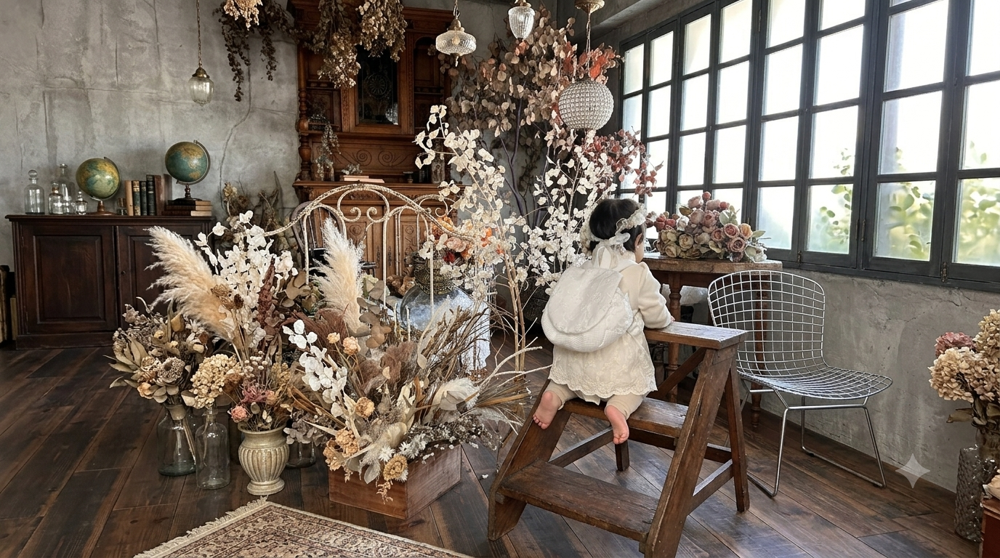
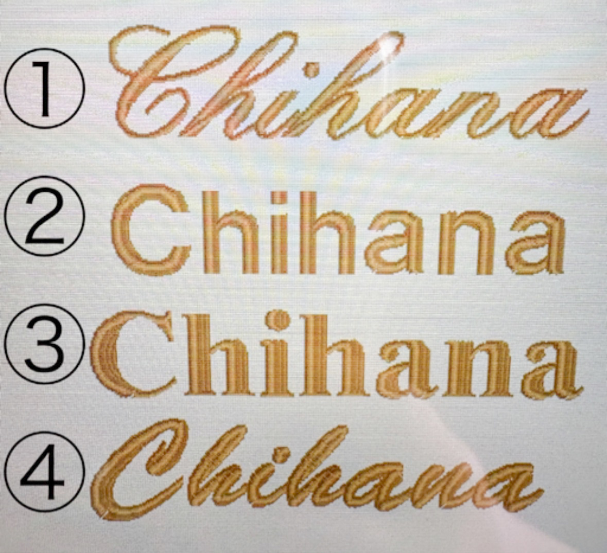

名入れ刺繍の一升餅リュックが
記念日をもっと特別にする理由

1歳の誕生日、一升餅リュックを探しているとき「名入れ刺繍ってどうやって決めるんだろう？」と疑問に思ったことはありませんか？この記事では、名入れ刺繍がなぜ記念品として特別なのか、そしてlil iro babyのオーダーのこだわりをご紹介します。
名前が入るだけで、全然違うものになる
一升餅リュックは1歳のお誕生日の特別な行事のアイテムです。だからこそ、「この子のためだけに作られた」という気持ちが伝わるものを贈りたいですよね。
名入れ刺繍が入ることで、リュックはただのバッグではなく、その子の名前が刻まれた一生ものの記念品になります。写真を見返したとき、「この名前を刺繍して、この日に背負わせたんだ」という記憶とともに、ずっと手元に残ります。
そして実は、一升餅のあともずっと活躍してくれるのがうれしいポイント。lil iro babyのリュックは肩紐に調節機能があるので、行事が終わったあとも普段使いとして長く使えます。おもちゃ入れやおやつ入れとしてお出かけに連れていったり——実際に3歳半になっても現役で背負っている子もいるくらい。「1歳のときだけ」ではなく、思い出とともに毎日の生活に溶け込んでいくリュックです。

▲ チェストベルト（オプション）
オプションでチェストベルトをつけることもできます。チェストベルトにはイニシャルと好きなモチーフを刺繍できるので、ずれ防止として使えるだけでなく、さりげないおしゃれポイントにも。前から見てもかわいく、特別感がぐっと増します。
lil iro babyのこだわり① 刺繍位置を3つから選べる
名入れの位置はリュックの印象を大きく変えます。lil iro babyでは、お好みに合わせて3つの位置からお選びいただけます。
✿ 正面 — 背負った姿を正面から見たとき、名前が主役になります
✿ 背面右下 — さりげなく、でも確かに刻まれる位置。最近人気です
✿ ふた裏 — 開けたときだけ見える、こっそりかわいい隠れ刺繍
最近は背面やふた裏を選ぶ方が増えています。防犯の観点から、お子さまの名前を正面に出したくないというご家庭も多いようです。
とはいえ、「前から見ても特別感を出したい！」という方にはオプションのチェストベルトがおすすめ。チェストベルトにはイニシャルを入れることができるので、正面からもさりげなくかわいく、特別な一本になりますよ。
「どこにしようか迷ってしまう」という方は、お気軽にご相談ください。一緒に考えます。
lil iro babyのこだわり② 実際の名前でシミュレーションをお送りします
名入れで一番多いお悩みが「字体のイメージが合わない」こと。見本で気に入った字体も、実際に自分の子の名前にしてみると「なんか違う…」と感じることは珍しくありません。
lil iro babyでは、ご注文をいただいた後、実際のお子さまのお名前で複数の字体バリエーションのシミュレーション画像をお送りしています。「思っていたのと違った」というすれ違いが起きないよう、実際に目で確認してからお選びいただける仕組みにしています。

▲ シミュレーション例
これはひとりひとりに手作業でお送りしている確認メールの一例です。ひと手間ではありますが、大切なお子さまのお名前だからこそ、絶対に外せない工程のひとつだと思っています。
「こっちの字体の方が可愛い！」「やっぱりシンプルなのがいいな」と、選ぶ時間もお楽しみいただけたら嬉しいです。
lil iro babyのこだわり③ 糸の色も選べる
字体が決まったら、次は糸の色。リュックの生地の色に合わせてなじませるのか、あえてアクセントカラーで目立たせるのか——糸の色ひとつで、ぐっと印象が変わります。
lil iro babyでは糸色もお選びいただけますので、お子さまのイメージカラーや生地との相性を見ながら、ぜひお気に入りの一本を見つけてください。
1歳のお誕生日に、世界にひとつのリュックを
一升餅リュックは、1歳という特別な瞬間を形に残せるアイテムです。名前・位置・字体・糸色、すべてをお選びいただいて完成する、その子だけの一点もの。
大切な記念日に、lil iro babyの名入れ刺繍リュックはいかがですか？ご不明な点はお気軽にご相談ください。
lil iro baby の一升餅リュックはこちらからご覧いただけます
リュックを見る